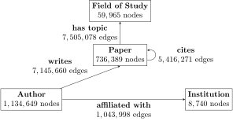
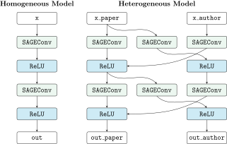

Heterogeneous Graph Learning
A large set of real-world datasets are stored as heterogeneous graphs, motivating the introduction of specialized functionality for them in PyG. For example, most graphs in the area of recommendation, such as social graphs, are heterogeneous, as they store information about different types of entities and their different types of relations. This tutorial introduces how heterogeneous graphs are mapped to PyG and how they can be used as input to Graph Neural Network models.
Heterogeneous graphs come with different types of information attached to nodes and edges. Thus, a single node or edge feature tensor cannot hold all node or edge features of the whole graph, due to differences in type and dimensionality. Instead, a set of types need to be specified for nodes and edges, respectively, each having its own data tensors. As a consequence of the different data structure, the message passing formulation changes accordingly, allowing the computation of message and update function conditioned on node or edge type.
Example Graph
As a guiding example, we take a look at the heterogeneous ogbn-mag network from the dataset suite:
{kind=link}
The given heterogeneous graph has 1,939,743 nodes, split between the four node types author, paper, institution and field of study. It further has 21,111,007 edges, which also are of one of four types:
writes: An author writes a specific paper
affiliated with: An author is affiliated with a specific institution
cites: A paper cites another paper
has topic: A paper has a topic of a specific field of study
The task for this graph is to infer the venue of each paper (conference or journal) given the information stored in the graph.
Creating Heterogeneous Graphs
First, we can create a data object of type torch_geometric.data.HeteroData, for which we define node feature tensors, edge index tensors and edge feature tensors individually for each type:
from torch_geometric.data import HeteroData
data = HeteroData()
data['paper'].x = ... # [num_papers, num_features_paper]
data['author'].x = ... # [num_authors, num_features_author]
data['institution'].x = ... # [num_institutions, num_features_institution]
data['field_of_study'].x = ... # [num_field, num_features_field]
data['paper', 'cites', 'paper'].edge_index = ... # [2, num_edges_cites]
data['author', 'writes', 'paper'].edge_index = ... # [2, num_edges_writes]
data['author', 'affiliated_with', 'institution'].edge_index = ... # [2, num_edges_affiliated]
data['paper', 'has_topic', 'field_of_study'].edge_index = ... # [2, num_edges_topic]
data['paper', 'cites', 'paper'].edge_attr = ... # [num_edges_cites, num_features_cites]
data['author', 'writes', 'paper'].edge_attr = ... # [num_edges_writes, num_features_writes]
data['author', 'affiliated_with', 'institution'].edge_attr = ... # [num_edges_affiliated, num_features_affiliated]
data['paper', 'has_topic', 'field_of_study'].edge_attr = ... # [num_edges_topic, num_features_topic]
Node or edge tensors will be automatically created upon first access and indexed by string keys.
Node types are identified by a single string while edge types are identified by using a triplet (source_node_type, edge_type, destination_node_type) of strings: the edge type identifier and the two node types between which the edge type can exist.
As such, the data object allows different feature dimensionalities for each type.
Dictionaries containing the heterogeneous information grouped by attribute names rather than by node or edge type can directly be accessed via data.{attribute_name}_dict and serve as input to GNN models later:
model = HeteroGNN(...)
output = model(data.x_dict, data.edge_index_dict, data.edge_attr_dict)
If the dataset exists in the list of Pytorch Geometric datasets, it can directly be imported and used.
In particular, it will be downloaded to root and processed automatically.
from torch_geometric.datasets import OGB_MAG
dataset = OGB_MAG(root='./data', preprocess='metapath2vec')
data = dataset[0]
The data object can be printed for verification.
HeteroData(
paper={
x=[736389, 128],
y=[736389],
train_mask=[736389],
val_mask=[736389],
test_mask=[736389]
},
author={ x=[1134649, 128] },
institution={ x=[8740, 128] },
field_of_study={ x=[59965, 128] },
(author, affiliated_with, institution)={ edge_index=[2, 1043998] },
(author, writes, paper)={ edge_index=[2, 7145660] },
(paper, cites, paper)={ edge_index=[2, 5416271] },
(paper, has_topic, field_of_study)={ edge_index=[2, 7505078] }
)
Note
The original ogbn-mag network does only provide features for “paper” nodes.
In OGB_MAG, we provide the option to download a processed version of it in which structural features (obtained from either "metapath2vec" or "TransE") are added to featureless nodes, as it is commonly done in the top ranked submissions to the OGB leaderboards.
Utility Functions
The torch_geometric.data.HeteroData class provides a number of useful utility functions to modify and analyze the given graph.
For example, single node or edge stores can be indiviually indexed:
paper_node_data = data['paper']
cites_edge_data = data['paper', 'cites', 'paper']
In case the edge type can be uniquely identified by only the pair of source and destination node types or the edge type, the following operations work as well:
cites_edge_data = data['paper', 'paper']
cites_edge_data = data['cites']
We can add new node types or tensors and remove them:
data['paper'].year = ... # Setting a new paper attribute
del data['field_of_study'] # Deleting 'field_of_study' node type
del data['has_topic'] # Deleting 'has_topic' edge type
We can access the meta-data of the data object, holding information of all present node and edge types:
node_types, edge_types = data.metadata()
print(node_types)
['paper', 'author', 'institution']
print(edge_types)
[('paper', 'cites', 'paper'),
('author', 'writes', 'paper'),
('author', 'affiliated_with', 'institution')]
The data object can be transferred between devices as usual:
data = data.to('cuda:0')
data = data.cpu()
We further have access to additional helper functions to analyze the given graph
data.has_isolated_nodes()
data.has_self_loops()
data.is_undirected()
and can convert it to a homogeneous “typed” graph via to_homogeneous() which is able to maintain features in case their dimensionalities match across different types:
homogeneous_data = data.to_homogeneous()
print(homogeneous_data)
Data(x=[1879778, 128], edge_index=[2, 13605929], edge_type=[13605929])
Here, homogeneous_data.edge_type represents an edge-level vector that holds the edge type of each edge as an integer.
Heterogeneous Graph Transformations
Most transformations for preprocessing regular graphs work as well on the heterogeneous graph data object.
import torch_geometric.transforms as T
data = T.ToUndirected()(data)
data = T.AddSelfLoops()(data)
data = T.NormalizeFeatures()(data)
Here, ToUndirected() transforms a directed graph into (the PyG representation of) an undirected graph, by adding reverse edges for all edges in the graph.
Thus, future message passing is performed in both direction of all edges.
The function may add reverse edge types to the heterogeneous graph, if necessary.
For all nodes of type 'node_type' and all existing edge types of the form ('node_type', 'edge_type', 'node_type'), the function AddSelfLoops() will add self-loop edges.
As a result, each node might receive one or more (one per appropriate edge type) messages from itself during message passing.
The transform NormalizeFeatures() works like in the homogeneous case, and normalizes all specified features (of all types) to sum up to one.
Creating Heterogeneous GNNs
Standard Message Passing GNNs (MP-GNNs) can not trivially be applied to heterogeneous graph data, as node and edge features from different types can not be processed by the same functions due to differences in feature type. A natural way to circumvent this is to implement message and update functions individually for each edge type. During runtime, the MP-GNN algorithm would need to iterate over edge type dictionaries during message computation and over node type dictionaries during node updates.
To avoid unnecessary runtime overheads and to make the creation of heterogeneous MP-GNNs as simple as possible, Pytorch Geometric provides three ways for the user to create models on heterogeneous graph data:
Automatically convert a homogeneous GNN model to a heterogeneous GNN model by making use of
torch_geometric.nn.to_hetero()ortorch_geometric.nn.to_hetero_with_bases()Define individual functions for different types using PyG’s wrapper
torch_geometric.nn.conv.HeteroConvfor heterogeneous convolutionDeploy existing (or write your own) heterogeneous GNN operators
In the following, each option is introduced in detail.
Automatically Converting GNN Models
Pytorch Geometric allows to automatically convert any PyG GNN model to a model for heterogeneous input graphs, using the built in functions torch_geometric.nn.to_hetero() or torch_geometric.nn.to_hetero_with_bases().
The following example shows how to apply it:
import torch_geometric.transforms as T
from torch_geometric.datasets import OGB_MAG
from torch_geometric.nn import SAGEConv, to_hetero
dataset = OGB_MAG(root='./data', preprocess='metapath2vec', transform=T.ToUndirected())
data = dataset[0]
class GNN(torch.nn.Module):
def __init__(self, hidden_channels, out_channels):
super().__init__()
self.conv1 = SAGEConv((-1, -1), hidden_channels)
self.conv2 = SAGEConv((-1, -1), out_channels)
def forward(self, x, edge_index):
x = self.conv1(x, edge_index).relu()
x = self.conv2(x, edge_index)
return x
model = GNN(hidden_channels=64, out_channels=dataset.num_classes)
model = to_hetero(model, data.metadata(), aggr='sum')
The process takes an existing GNN model and duplicates the message functions to work on each edge type individually, as detailed in the following figure.
{kind=link}
As a result, the model now expects dictionaries with node and edge types as keys as input arguments, rather than single tensors utilized in homogeneous graphs.
Note that we pass in a tuple of in_channels to SAGEConv in order to allow for message passing in bipartite graphs.
Note
Since the number of input features and thus the size of tensors varies between different types, PyG can make use of lazy initialization to initialize parameters in heterogeneous GNNs (as denoted by -1 as the in_channels argument).
This allows us to avoid calculating and keeping track of all tensor sizes of the computation graph.
Lazy initialization is supported for all existing PyG operators.
We can initialize the model’s parameters by calling it once:
with torch.no_grad(): # Initialize lazy modules.
out = model(data.x_dict, data.edge_index_dict)
Both to_hetero() and to_hetero_with_bases() are very flexible with respect to the homogeneous architectures that can be automatically converted to heterogeneous ones, e.g., applying skip-connections, jumping knowledge or other techniques are supported out-of-the-box.
For example, this is all it takes to implement a heterogeneous graph attention network with learnable skip-connections:
from torch_geometric.nn import GATConv, Linear, to_hetero
class GAT(torch.nn.Module):
def __init__(self, hidden_channels, out_channels):
super().__init__()
self.conv1 = GATConv((-1, -1), hidden_channels, add_self_loops=False)
self.lin1 = Linear(-1, hidden_channels)
self.conv2 = GATConv((-1, -1), out_channels, add_self_loops=False)
self.lin2 = Linear(-1, out_channels)
def forward(self, x, edge_index):
x = self.conv1(x, edge_index) + self.lin1(x)
x = x.relu()
x = self.conv2(x, edge_index) + self.lin2(x)
return x
model = GAT(hidden_channels=64, out_channels=dataset.num_classes)
model = to_hetero(model, data.metadata(), aggr='sum')
Note that we disable the creation of self loops via the add_self_loops=False argument.
This is done because the concept of self-loops is not well-defined in bipartite graphs (message passing for an edge type with distinct source and destination node types), and we would mistakenly add the edges [(0, 0), (1, 1), ...] to the bipartite graph.
To preserve central node information, we thus utilize a learnable skip-connection via conv(x, edge_index) + lin(x) instead, which will perform attention-based message passing from source to destination node features, and its output is then summed up to the existing destination node features.
Afterwards, the created model can be trained as usual:
def train():
model.train()
optimizer.zero_grad()
out = model(data.x_dict, data.edge_index_dict)
mask = data['paper'].train_mask
loss = F.cross_entropy(out['paper'][mask], data['paper'].y[mask])
loss.backward()
optimizer.step()
return float(loss)
Using the Heterogeneous Convolution Wrapper
The heterogeneous convolution wrapper torch_geometric.nn.conv.HeteroConv allows to define custom heterogeneous message and update functions to build arbitrary MP-GNNs for heterogeneous graphs from scratch.
While the automatic converter to_hetero() uses the same operator for all edge types, the wrapper allows to define different operators for different edge types.
Here, HeteroConv takes a dictionary of submodules as input, one for each edge type in the graph data.
The following example shows how to apply it.
import torch_geometric.transforms as T
from torch_geometric.datasets import OGB_MAG
from torch_geometric.nn import HeteroConv, GCNConv, SAGEConv, GATConv, Linear
dataset = OGB_MAG(root='./data', preprocess='metapath2vec', transform=T.ToUndirected())
data = dataset[0]
class HeteroGNN(torch.nn.Module):
def __init__(self, hidden_channels, out_channels, num_layers):
super().__init__()
self.convs = torch.nn.ModuleList()
for _ in range(num_layers):
conv = HeteroConv({
('paper', 'cites', 'paper'): GCNConv(-1, hidden_channels),
('author', 'writes', 'paper'): SAGEConv((-1, -1), hidden_channels),
('paper', 'rev_writes', 'author'): GATConv((-1, -1), hidden_channels, add_self_loops=False),
}, aggr='sum')
self.convs.append(conv)
self.lin = Linear(hidden_channels, out_channels)
def forward(self, x_dict, edge_index_dict):
for conv in self.convs:
x_dict = conv(x_dict, edge_index_dict)
x_dict = {key: x.relu() for key, x in x_dict.items()}
return self.lin(x_dict['author'])
model = HeteroGNN(hidden_channels=64, out_channels=dataset.num_classes,
num_layers=2)
We can initialize the model by calling it once (see here for more details about lazy initialization)
with torch.no_grad(): # Initialize lazy modules.
out = model(data.x_dict, data.edge_index_dict)
and run the standard training procedure as outlined here.
Deploy Existing Heterogeneous Operators
PyG provides operators (e.g., torch_geometric.nn.conv.HGTConv), which are specifically designed for heterogeneous graphs.
These operators can be directly used to build heterogeneous GNN models as can be seen in the following example:
import torch_geometric.transforms as T
from torch_geometric.datasets import OGB_MAG
from torch_geometric.nn import HGTConv, Linear
dataset = OGB_MAG(root='./data', preprocess='metapath2vec', transform=T.ToUndirected())
data = dataset[0]
class HGT(torch.nn.Module):
def __init__(self, hidden_channels, out_channels, num_heads, num_layers):
super().__init__()
self.lin_dict = torch.nn.ModuleDict()
for node_type in data.node_types:
self.lin_dict[node_type] = Linear(-1, hidden_channels)
self.convs = torch.nn.ModuleList()
for _ in range(num_layers):
conv = HGTConv(hidden_channels, hidden_channels, data.metadata(),
num_heads, group='sum')
self.convs.append(conv)
self.lin = Linear(hidden_channels, out_channels)
def forward(self, x_dict, edge_index_dict):
for node_type, x in x_dict.items():
x_dict[node_type] = self.lin_dict[node_type](x).relu_()
for conv in self.convs:
x_dict = conv(x_dict, edge_index_dict)
return self.lin(x_dict['author'])
model = HGT(hidden_channels=64, out_channels=dataset.num_classes,
num_heads=2, num_layers=2)
We can initialize the model by calling it once (see here for more details about lazy initialization).
with torch.no_grad(): # Initialize lazy modules.
out = model(data.x_dict, data.edge_index_dict)
and run the standard training procedure as outlined here.
Heterogeneous Graph Samplers
PyG provides various functionalities for sampling heterogeneous graphs, i.e. in the standard torch_geometric.loader.NeighborLoader class or in dedicated heterogeneous graph samplers such as torch_geometric.loader.HGTLoader.
This is especially useful for efficient representation learning on large heterogeneous graphs, where processing the full number of neighbors is too computationally expensive.
Heterogeneous graph support for other samplers such as torch_geometric.loader.ClusterLoader or torch_geometric.loader.GraphSAINTLoader will be added soon.
Overall, all heterogeneous graph loaders will produce a HeteroData object as output, holding a subset of the original data, and mainly differ in the way their sampling procedures works.
As such, only minimal code changes are required to convert the training procedure from full-batch training to mini-batch training.
Performing neighbor sampling using NeighborLoader works as outlined in the following example:
import torch_geometric.transforms as T
from torch_geometric.datasets import OGB_MAG
from torch_geometric.loader import NeighborLoader
transform = T.ToUndirected() # Add reverse edge types.
data = OGB_MAG(root='./data', preprocess='metapath2vec', transform=transform)[0]
train_loader = NeighborLoader(
data,
# Sample 15 neighbors for each node and each edge type for 2 iterations:
num_neighbors=[15] * 2,
# Use a batch size of 128 for sampling training nodes of type "paper":
batch_size=128,
input_nodes=('paper', data['paper'].train_mask),
)
batch = next(iter(train_loader))
Notably, NeighborLoader works for both homogeneous and heterogeneous graphs.
When operating in heterogeneous graphs, more fine-grained control over the amount of sampled neighbors of individual edge types is possible, but not necessary, e.g.:
num_neighbors = {key: [15] * 2 for key in data.edge_types}
Using the input_nodes argument, we further specify the type and indices of nodes from which we want to sample local neighborhoods, i.e. all the “paper” nodes marked as training nodes according to data['paper'].train_mask.
Printing batch then yields the following output:
HeteroData(
paper={
x=[20799, 256],
y=[20799],
train_mask=[20799],
val_mask=[20799],
test_mask=[20799],
batch_size=128
},
author={ x=[4419, 128] },
institution={ x=[302, 128] },
field_of_study={ x=[2605, 128] },
(author, affiliated_with, institution)={ edge_index=[2, 0] },
(author, writes, paper)={ edge_index=[2, 5927] },
(paper, cites, paper)={ edge_index=[2, 11829] },
(paper, has_topic, field_of_study)={ edge_index=[2, 10573] },
(institution, rev_affiliated_with, author)={ edge_index=[2, 829] },
(paper, rev_writes, author)={ edge_index=[2, 5512] },
(field_of_study, rev_has_topic, paper)={ edge_index=[2, 10499] }
)
As such, batch holds a total of 28,187 nodes involved for computing the embeddings of 128 “paper” nodes.
Sampled nodes are always sorted based on the order in which they were sampled.
Thus, the first batch['paper'].batch_size nodes represent the set of original mini-batch nodes, making it easy to obtain the final output embeddings via slicing.
Training our heterogeneous GNN model in mini-batch mode is then similar to training it in full-batch mode, except that we now iterate over the mini-batches produced by train_loader and optimize model parameters based on individual mini-batches:
def train():
model.train()
total_examples = total_loss = 0
for batch in train_loader:
optimizer.zero_grad()
batch = batch.to('cuda:0')
batch_size = batch['paper'].batch_size
out = model(batch.x_dict, batch.edge_index_dict)
loss = F.cross_entropy(out['paper'][:batch_size],
batch['paper'].y[:batch_size])
loss.backward()
optimizer.step()
total_examples += batch_size
total_loss += float(loss) * batch_size
return total_loss / total_examples
Importantly, we only make use of the first 128 “paper” nodes during loss computation.
We do so by slicing both “paper” labels batch['paper'].y and “paper” output predictions out['paper'] based on batch['paper'].batch_size, representing the labels and final output predictions of original mini-batch nodes, respectively.